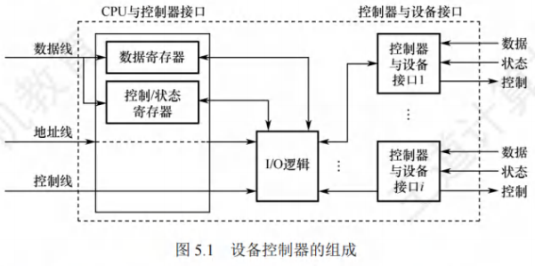
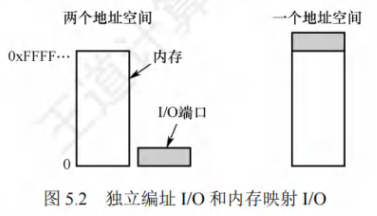
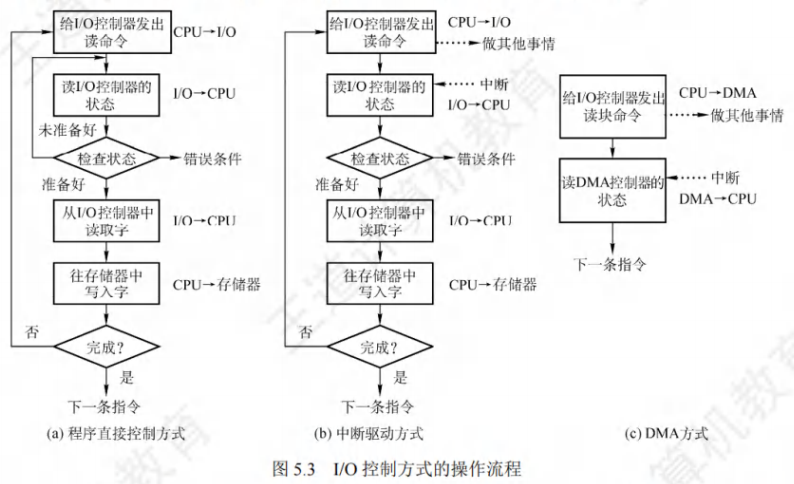
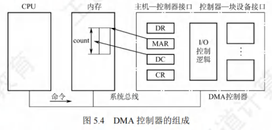
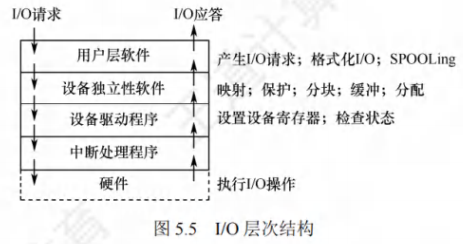

I/O管理概述
[toc]
I/O设备
I/O设备是计算机与外部环境交互的核心部件，需从“分类维度”“接口机制”“端口编址”三个层面理解其基本特性，为后续I/O控制与软件设计奠定基础。
设备的分类
I/O设备种类繁多，按不同属性分类可明确其管理需求与使用场景，核心分类方式如下：
按信息交换的单位分类
- 块设备：
以“数据块”为交换单位（如磁盘、磁带），核心特征是传输速率高、可寻址（可随机读写任意块），适合存储大量数据，通常采用DMA或通道控制方式。 - 字符设备：
以“字符”为交换单位（如键盘、打印机、终端），核心特征是传输速率低、不可寻址（需顺序读写），通常采用中断驱动方式。
按设备的传输速率分类
- 低速设备：传输速率仅每秒几字节至数百字节，如键盘、鼠标、手写板（人机交互类设备）；
- 中速设备：传输速率每秒数千字节至数万字节，如激光打印机、扫描仪（数据处理类设备）；
- 高速设备：传输速率每秒数百千字节至千兆字节，如磁盘、光盘、SSD（存储类设备）。
按设备的使用特性分类
- 存储设备：用于长期存储信息，如硬盘、磁带、U盘（核心需求是“可靠存储+高效读写”）；
- 输入/输出设备：
- 输入设备：将外部信息传入计算机，如键盘、鼠标、麦克风；
- 输出设备：将计算机数据传出，如显示器、打印机、音箱；
- 交互式设备：集成输入与输出功能，如触控屏、绘图板。
按设备的共享属性分类
- 独占设备：同一时刻仅允许一个进程使用，释放后才能分配给其他进程，如打印机、键盘（避免并发冲突，需通过“设备分配”机制管理）；
- 共享设备：同一时间段内允许多进程分时使用，如磁盘（通过“分时访问”提高利用率，需避免数据竞争）；
- 虚拟设备：通过SPOOLing技术将独占设备改造为共享设备（如“虚拟打印机”），将物理设备映射为多个逻辑设备，实现多进程同时“使用”。
I/O接口
I/O接口（又称设备控制器）是CPU与I/O设备之间的“中间桥梁”，负责解析CPU命令、控制设备工作，屏蔽硬件细节，使CPU无需直接处理设备底层逻辑。设备控制器的核心组成如图所示：

设备控制器的核心组成
- 与CPU的接口：实现CPU与控制器的通信，包含三类信号线：
- 数据线：传输读/写数据、设备状态（如“就绪”）、控制指令（如“读”“写”）；
- 地址线：传输I/O端口地址（定位控制器中的寄存器）；
- 控制线：传输CPU发出的控制信号（如“启动设备”“停止设备”）。
- 与设备的接口：一个控制器可连接1个或多个同类型设备，每个接口传输“数据、控制、状态”三类信号（如向打印机发送“打印数据”“开始打印”信号，接收“打印完成”状态）。
- I/O逻辑：控制器的“大脑”，负责解析CPU指令：
- 译码：将CPU发来的I/O命令（如“磁盘读”）翻译为设备可识别的底层指令；
- 地址识别：根据地址线信号定位目标设备（若控制器连接多个设备）；
- 控制设备执行：向设备发送操作信号，同步数据传输。
设备控制器的主要功能
- 命令接收与识别：接收CPU的I/O命令（如磁盘的“读块”“写块”），验证命令合法性并执行；
- 数据交换：在CPU与控制器（通过数据寄存器）、控制器与设备（通过设备接口）之间传输数据；
- 状态报告：记录设备当前状态（如“忙”“空闲”“出错”），供CPU查询；
- 地址识别：定位设备或设备内的存储单元（如磁盘的磁道、扇区）；
- 数据缓冲：设置缓冲区（如字符设备的字符缓冲区），解决CPU与设备的速度差异；
- 差错控制：检测数据传输错误（如奇偶校验），必要时触发重试或向CPU报告错误。
I/O接口的类型
按不同维度划分I/O接口，可明确其适用场景与实现方式：
- 按数据传送方式：
- 并行接口：一个字节/字的所有位同时传输（如打印机接口），速率高但布线多，适合短距离；
- 串行接口：一位一位有序传输（如USB、串口），速率低但布线少，适合长距离。
- 按主机控制方式：
- 程序查询接口：配合程序直接控制方式，需CPU轮询设备状态；
- 中断接口：配合中断驱动方式，设备就绪时主动向CPU发中断；
- DMA接口：配合DMA方式，实现设备与内存直接数据交换。
- 按功能灵活性：
- 可编程接口：通过编程修改接口功能（如8255芯片），通用性强；
- 不可编程接口：功能固定（如简单LED指示灯接口），实现简单。
I/O端口
I/O端口是设备控制器中可被CPU直接访问的寄存器，用于CPU与控制器交换命令、数据和状态。核心分为三类寄存器，需通过“编址”实现CPU对端口的访问。
三类核心端口寄存器
| 寄存器类型 | 功能描述 | 示例 |
|---|---|---|
| 数据寄存器 | 缓存CPU与设备之间的传输数据（输入时存设备数据，输出时存CPU数据） | 磁盘数据寄存器暂存读取的扇区数据 |
| 状态寄存器 | 保存设备当前状态（如“就绪=1”“忙=0”“出错=1”），供CPU读取 | 打印机状态寄存器显示“打印完成” |
| 控制寄存器 | 接收CPU写入的控制命令（如“启动设备”“设置传输模式”） | 串口控制寄存器设置波特率 |
I/O端口的编址方式
CPU需通过“地址”访问端口，两种主流编址方式的差异直接影响CPU指令设计与端口访问效率：

| 对比维度 | 独立编址（I/O映射） | 统一编址（内存映射） |
|---|---|---|
| 地址空间 | 与主存地址空间独立（两套地址） | 占用主存地址空间的一部分（一套地址） |
| 访问指令 | 专用I/O指令（如IN、OUT） | 通用访存指令（如MOV、LOAD） |
| 寻址速度 | 快（端口数量少，地址线短，译码简单） | 慢（需全地址线译码，电路复杂） |
| 主存容量 | 不影响（端口地址不占用主存空间） | 减少（端口地址占用部分主存地址） |
| 灵活性 | 低（I/O指令功能简单，仅支持数据传输） | 高（可用访存指令的所有寻址方式，如间接寻址） |
| 保护机制 | 需单独设计（用户程序不可访问端口） | 可通过虚拟存储管理实现（复用主存保护） |
I/O控制方式
I/O控制方式的演进核心是“减少CPU对I/O的干预”，从CPU全程参与到仅在首尾干预，逐步提升CPU与设备的并行性，四种方式的效率与复杂度依次递增。

程序直接控制方式（程序轮询方式）
工作原理
- CPU向设备控制器发送I/O指令（如“读一个字节”），启动设备；
- CPU通过“轮询”（循环测试）设备状态寄存器，判断设备是否就绪（如“数据是否存入数据寄存器”）；
- 设备就绪后，CPU从数据寄存器读取数据，存入内存；若未就绪，CPU继续轮询，直至设备就绪。
特点
- 优点：实现简单（无需中断或DMA硬件），适合简单硬件环境；
- 缺点：CPU与设备完全串行（设备准备数据时，CPU无意义等待），CPU利用率极低（如磁盘准备数据需毫秒级，CPU轮询浪费百万级指令周期）。
- 适用场景：早期简单计算机、低速设备（如早期打印机）。
中断驱动方式
工作原理（CPU与设备视角）
- 设备视角：接收CPU的“读命令”后开始准备数据，数据存入数据寄存器后，向CPU发送中断信号，等待CPU读取数据；
- CPU视角：发送读命令后，解除当前进程阻塞，转去执行其他进程；收到中断信号后，保存当前进程上下文，执行中断处理程序（从数据寄存器读数据存入内存），处理完成后唤醒原进程，恢复上下文继续执行。
特点
- 优点：设备准备数据时，CPU可执行其他进程（并行工作），CPU利用率显著提升；
- 缺点：
- 数据传输需经过CPU（设备→CPU寄存器→内存），增加CPU开销；
- 以“字节/字”为单位干预（每传一个单位数据需一次中断），块设备（如磁盘）使用时中断频繁，效率低。
- 适用场景：低速字符设备（如键盘、打印机）。
DMA方式
核心思想
在设备与内存之间开辟“直接数据通路”，数据传输无需CPU参与，仅在传输开始和结束时需CPU干预，以“数据块”为传输单位。
关键硬件：DMA控制器（DMAC）
DMAC需包含四类寄存器，用于管理数据传输：
| 寄存器 | 功能 |
|---|---|
| 命令/状态寄存器（CR） | 接收CPU的DMA命令（如“读块”），记录DMAC状态（如“传输中”“完成”） |
| 内存地址寄存器（MAR） | 存储数据在内存的起始地址（输入时存目标地址，输出时存源地址） |
| 数据寄存器（DR） | 暂存设备与内存之间传输的数据（解决设备与内存速度差异） |
| 数据计数器（DC） | 存储本次传输的“字节数”，传输一次减1，减至0表示传输完成 |
工作过程
- CPU初始化DMAC：设置MAR（内存起始地址）、DC（传输字节数）、CR（传输方向，如“设备→内存”），启动DMAC；
- DMAC控制设备与内存直接传输数据（每传一个字节，MAR+1、DC-1），无需CPU参与；
- 传输完成（DC=0），DMAC向CPU发送中断信号，CPU执行中断处理程序（如通知进程传输完成）。

特点
- 优点：以“块”为单位传输，CPU仅首尾干预；数据不经过CPU，CPU与设备并行性大幅提升；
- 缺点：DMAC硬件复杂，成本高；一个DMAC通常对应一个设备（或一类设备），扩展性差。
- 适用场景：高速块设备（如磁盘、SSD）。
通道控制方式
核心思想
引入“通道”（特殊处理机），替代CPU管理多台设备的I/O传输，CPU仅需向通道发送“启动命令”（指明通道程序地址），通道执行通道程序完成所有I/O操作，结束后向CPU发中断。
通道与其他部件的区别
- 与CPU的区别：通道指令类型单一（仅I/O相关），无独立内存（与CPU共享主存），仅负责I/O控制；
- 与DMAC的区别：DMAC需CPU设置传输参数（如内存地址、块大小），一个DMAC管一个设备；通道可自主执行通道程序（含传输参数），一个通道管多台设备（如磁盘、磁带）。
工作过程
- CPU将“通道程序”（含设备地址、传输参数、操作命令）存入主存；
- CPU向通道发送“启动命令”（含通道程序在主存的地址），转去执行其他进程；
- 通道读取通道程序，依次控制多台设备完成数据传输（如先读磁盘，再写磁带）；
- 所有操作完成后，通道向CPU发中断，CPU处理中断（如释放设备、唤醒进程）。
特点
- 优点：实现CPU、通道、多设备三者并行；大幅减少CPU干预，适合多设备、大数据量场景；
- 缺点：通道硬件复杂，成本高（早期大型机常用，现代PC多以“高级DMAC”替代）。
- 适用场景：大型计算机系统、多设备集群（如磁盘阵列）。
I/O软件层次结构
为降低I/O软件的复杂度、提升可移植性，采用“层次化结构”，每层屏蔽下层实现细节，向上层提供标准化服务。从顶层到低层依次为：用户层软件、设备独立性软件、设备驱动程序、中断处理程序。

1. 用户层软件
- 功能：提供用户与I/O设备的交互接口，封装I/O操作细节；
- 实现形式：用户程序中的I/O库函数（如C语言的
fread()、fwrite()）、图形化界面（如文件管理器的“复制”“粘贴”）； - 核心逻辑：用户调用库函数后，库函数通过“系统调用”请求操作系统内核服务，不直接操作硬件。
2. 设备独立性软件（设备无关层）
- 核心目标：实现“设备独立性”（应用程序使用“逻辑设备名”，而非“物理设备名”），屏蔽设备硬件差异；
- 关键概念：
- 逻辑设备名：用户程序中使用的抽象设备名（如“打印机”“磁盘”）；
- 物理设备名：实际硬件的标识（如“LPT1”“/dev/sda1”）；
- 设备映射：将逻辑设备名转换为物理设备名（通过“逻辑设备表LUT”实现）。
- 主要功能：
- 设备分配与回收：管理独占设备（如打印机），避免并发冲突；
- 设备保护：检查用户对设备的访问权限（如普通用户不可直接访问系统磁盘）；
- 缓冲管理：设置系统级缓冲区（如块设备的磁盘缓冲区），平衡CPU与设备速度；
- 差错控制：处理I/O错误（如磁盘读错误，触发重试或报告用户）；
- 提供统一接口：向上层（用户层）提供标准化I/O接口（如
read()、write()），无论何种设备，接口形式一致。
3. 设备驱动程序
- 定位：I/O软件与硬件的“桥梁”，每种设备（或一类设备）对应一个驱动程序；
- 功能：
- 命令转换：将上层发来的抽象I/O命令（如“读磁盘块”）转换为设备可识别的底层指令（如“磁道号=5，扇区号=3，读操作”）；
- 硬件控制：向设备控制器发送控制信号，启动设备，读取设备状态；
- 数据传输：协调设备与内存的数据交换（如配合DMAC设置传输参数）；
- 特点：与硬件强相关（需了解设备控制器的寄存器地址、指令格式），可动态加载/卸载（如Windows的“设备管理器”、Linux的内核模块）。
4. 中断处理程序
- 定位：I/O软件的最底层，直接处理设备中断信号；
- 核心任务：
- 上下文切换：保存被中断进程的CPU上下文（寄存器、程序计数器）；
- 中断处理：识别中断源（如“磁盘传输完成”“打印机出错”），执行对应处理逻辑（如唤醒等待I/O的进程）；
- 恢复上下文：处理完成后，恢复被中断进程（或调度新进程）的上下文，继续执行；
- 特点：执行时间短（避免阻塞其他进程），需屏蔽中断（防止嵌套中断导致混乱）。
层次交互示例（用户读磁盘文件）
- 用户调用
fread()库函数（用户层），请求读取文件； - 库函数触发
read()系统调用，进入设备独立性软件（设备无关层）； - 设备独立性软件将“逻辑设备名（如‘磁盘’）”映射为“物理设备名（如‘/dev/sda1’）”，检查权限后，将请求转发给磁盘驱动程序；
- 磁盘驱动程序将“读文件”命令转换为底层指令（如“读扇区100”），设置DMAC参数，启动磁盘；
- 磁盘传输完成后，向CPU发中断，中断处理程序执行：唤醒等待I/O的进程，释放DMAC；
- 用户进程恢复执行，从内存缓冲区读取数据，完成I/O操作。
应用程序I/O接口
应用程序通过操作系统提供的I/O接口访问设备，接口类型按设备分类，同时支持“阻塞”与“非阻塞”两种I/O模式，适配不同并发需求。
I/O接口的分类
1. 字符设备接口
- 适用设备：键盘、打印机、终端等字符设备；
- 核心特性：不可寻址、顺序存取，需通过缓冲区交互；
- 关键操作：
get()：从字符缓冲区读取一个字符（如键盘输入）；put()：向字符缓冲区写入一个字符（如打印机输出）；ioctl()：设备控制指令（如设置串口波特率、打印机纸张大小）；- 打开/关闭：实现独占设备的互斥访问（如打开打印机后，其他进程需等待）。
2. 块设备接口
- 适用设备：磁盘、SSD等块设备；
- 核心特性：可寻址、按块传输，支持随机访问；
- 关键功能：
- 地址抽象：将磁盘的“磁道-扇区”二维地址转换为“线性块号”（如扇区0~n-1），屏蔽硬件细节；
- 命令映射：将上层“读文件”“写文件”抽象命令，映射为“读块”“写块”底层操作；
- 内存映射I/O：通过
mmap()系统调用将磁盘文件映射为虚拟内存地址，应用程序直接读写内存（无需read()/write()），由虚拟存储系统自动完成“内存-磁盘”数据同步。
3. 网络设备接口
- 适用场景：计算机与网络中其他设备的通信（如上网、文件传输）；
- 主流接口：套接字（Socket）接口；
- 核心逻辑：
- 应用程序创建“套接字”（如TCP套接字、UDP套接字），指定目标IP地址与端口；
- 通过
send()/recv()系统调用发送/接收数据，操作系统负责底层网络协议（TCP/IP）的处理；
- 特点：无“设备名”概念，以“网络地址+端口”标识通信对象，支持跨主机交互。
阻塞I/O与非阻塞I/O
两种I/O模式的核心差异在于“I/O等待期间进程的状态”，适配不同并发场景：
1. 阻塞I/O
- 工作机制：应用程序调用I/O操作后，进程立即进入阻塞状态（移至阻塞队列），放弃CPU；I/O操作完成后，进程被唤醒（移至就绪队列），继续执行；
- 类比示例：点奶茶后原地等待，不做其他事，直到奶茶做好；
- 优点：实现简单（无需处理轮询），CPU利用率高（阻塞时CPU可调度其他进程）；
- 缺点：并发量低（一个进程对应一个I/O请求，大量请求需创建大量进程）；
- 适用场景：并发量小的应用（如个人桌面程序、简单服务器）。
2. 非阻塞I/O
- 工作机制：应用程序调用I/O操作后，进程不阻塞，继续执行；进程需通过“轮询”（如
poll()/select()）检查I/O是否完成；I/O就绪后，进程读取数据并处理； - 类比示例：点奶茶后去逛商场，每隔一段时间返回询问是否做好；
- 优点：并发量高（一个进程可处理多个I/O请求）；
- 缺点：轮询占用CPU资源（即使I/O未就绪，进程仍需频繁检查）；
- 适用场景：高并发应用（如Web服务器、数据库服务器），通常与“I/O多路复用”（如
epoll）结合使用，减少轮询开销。
阻塞与非阻塞I/O对比
| 对比维度 | 阻塞I/O | 非阻塞I/O |
|---|---|---|
| 进程状态 | I/O等待时阻塞，释放CPU | I/O等待时运行，不释放CPU |
| 并发能力 | 低（多进程/线程） | 高（单进程/线程处理多请求） |
| CPU开销 | 低（阻塞时无CPU占用） | 高（轮询需CPU时间） |
| 实现复杂度 | 简单 | 复杂（需处理轮询、I/O就绪判断） |
| 适用场景 | 低并发、简单应用 | 高并发、高性能服务 |